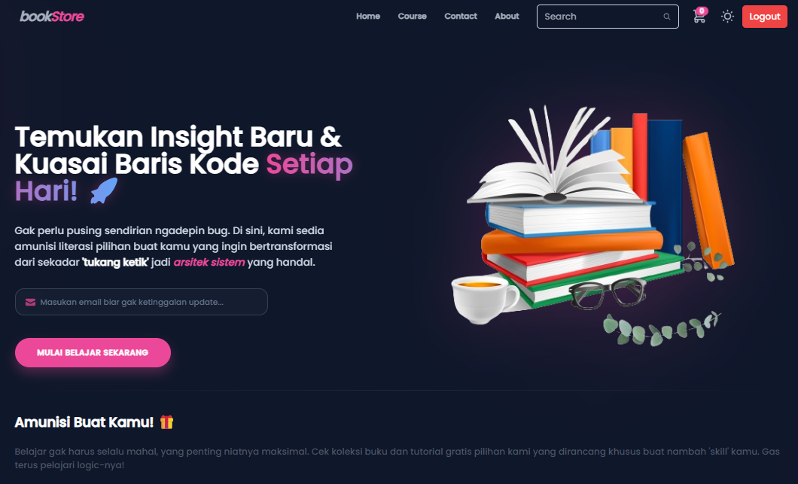
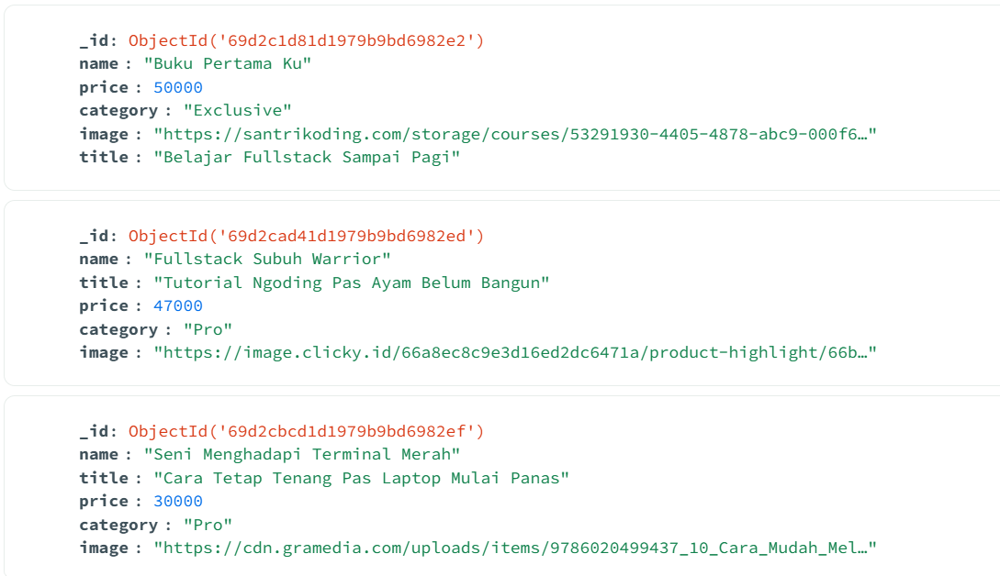
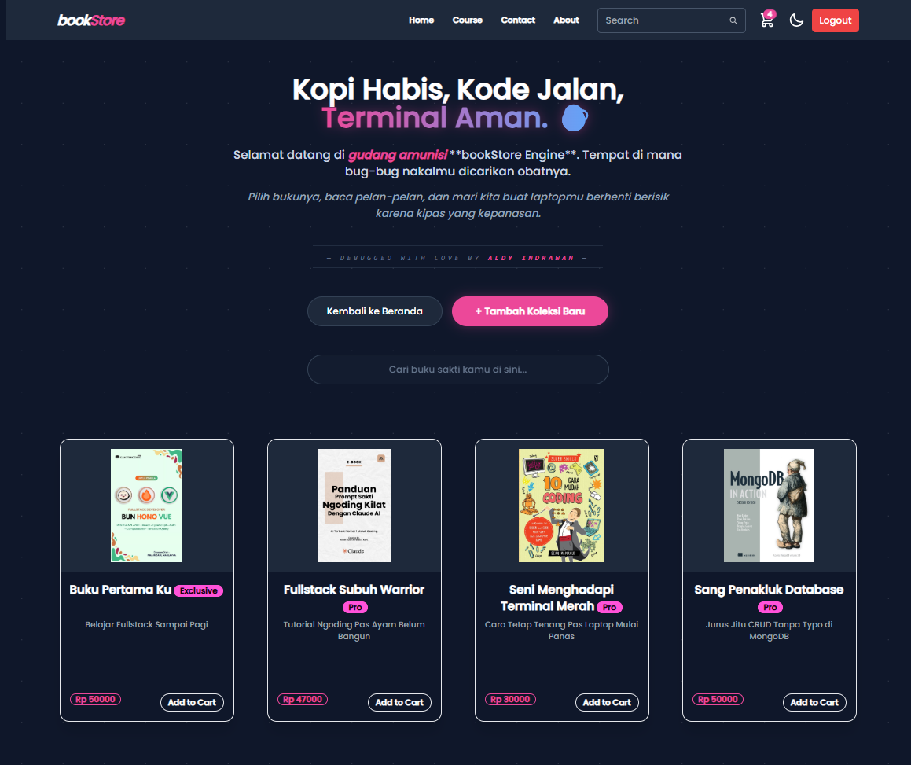
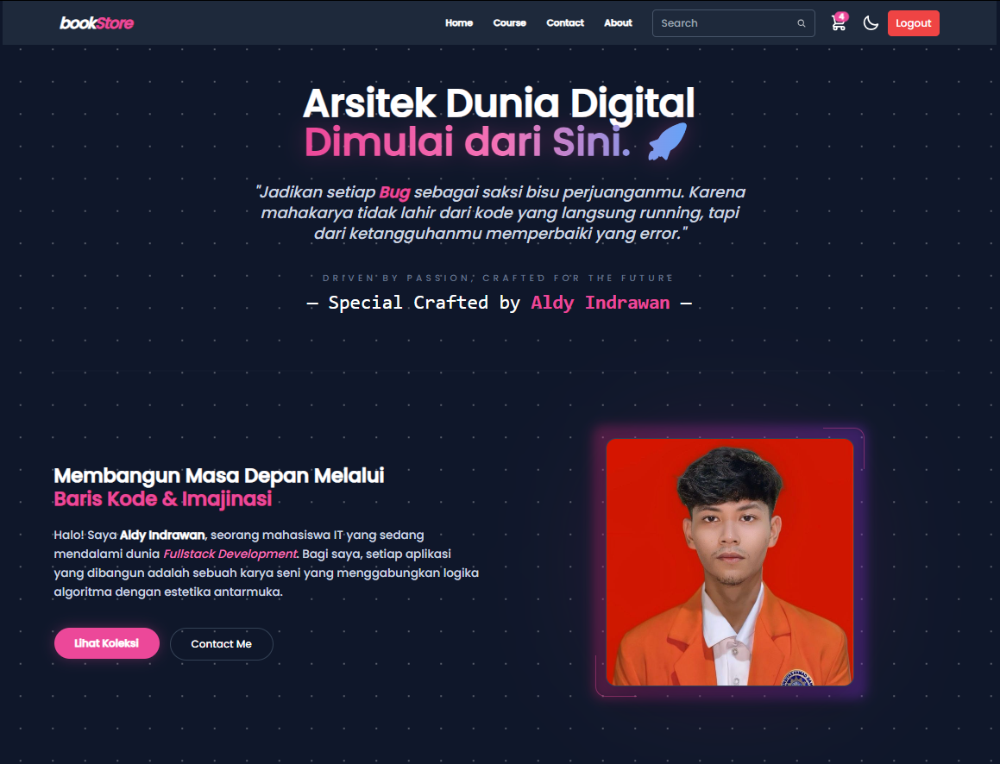

BookStore Engine.
GITHUB | VIEW REPOAnalisis sistem terintegrasi yang menghubungkan **Express.js API** dengan **MongoDB Atlas** untuk pengolahan data buku yang presisi dan aman.

Database &
Logic Flow.
Sistem ini menggunakan **Architecture Document-Based**. Berbeda dengan database SQL konvensional, MongoDB memungkinkan penyimpanan data buku yang fleksibel dalam format BSON. Penanganan error dan skema data diatur secara ketat melalui **Mongoose ODM**.
// Backend Endpoint Logic
router.get('/', async (req, res) => {
const books = await Book.find({});
res.status(200).json(books);
});

Data Mapping: MongoDB Atlas JSON
API Operations.
Implementasi fungsi **CRUD (Create, Read, Update, Delete)** melalui endpoint RESTful API. Admin memiliki akses penuh untuk memanipulasi database secara aman.

POST /add-book
Source: Github Repository Build v1.0

GET /all-books
Source: Github Repository Build v1.0

Data
Persistence.
Setiap entri data memiliki **Unique Identifier (_id)**. Tabel ini merepresentasikan hasil akhir dari proses penarikan data (Fetch) yang dilakukan oleh Backend untuk memastikan akurasi stok buku.